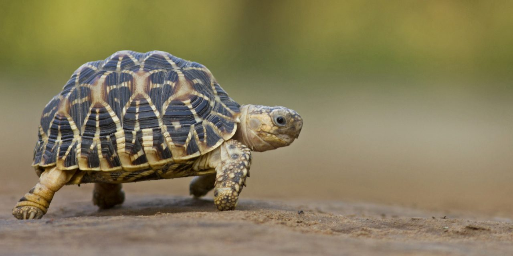
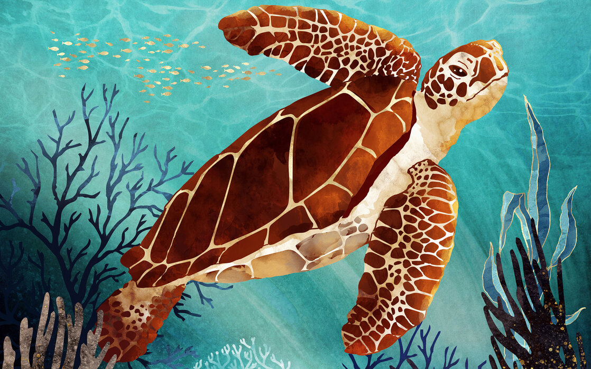
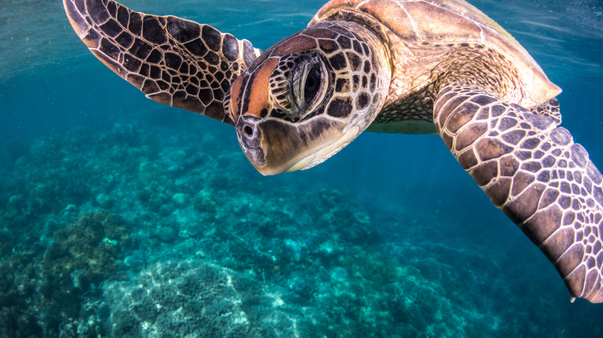

Jakie akcesoria są niezbędne dla żółwia wodnego?

Akcesoria odgrywają kluczową rolę w hodowli żółwi wodnych, zapewniając im komfort oraz bezpieczeństwo.
Podstawowym wyposażeniem jest akwarium, które powinno być odpowiednio dużą przestrzenią do pływania oraz wygrzewania się.
Niezbędne są również lampy UVB, które dostarczają żółwiom promieniowania niezbędnego do syntezy witaminy D3.
Bez tego elementu, żółwie mogą cierpieć na choroby związane z niedoborem tej witaminy, takie jak deformacje skorupy.
Jakie inne akcesoria warto mieć?

Oprócz lamp UVB, warto zainwestować w grzałkę, która pomoże utrzymać odpowiednią temperaturę wody, oraz filtr do wody, aby zapewnić czystość w akwarium.
Kolejnym przydatnym akcesorium są dekoracje, takie jak kamienie, rośliny wodne oraz kryjówki, które nie tylko estetycznie wyglądają, ale także zapewniają żółwiom miejsce do odpoczynku oraz ucieczki przed ewentualnym stresem.
Warto także zaopatrzyć się w termometr, aby stale monitorować temperaturę wody i powietrza w akwarium, co jest kluczowe dla zdrowia twojego żółwia.
Jak dbać o akcesoria w akwarium?

Regularne czyszczenie akcesoriów, takich jak filtry i dekoracje, jest niezbędne, aby utrzymać odpowiednie warunki w akwarium.
Filtry należy wymieniać lub czyścić zgodnie z zaleceniami producenta, aby uniknąć gromadzenia się zanieczyszczeń.
Dekoracje można myć w letniej wodzie, a w razie potrzeby stosować bezpieczne dla zwierząt detergenty.
Zachowanie czystości akcesoriów przekłada się na zdrowie żółwia i komfort jego życia w domowym akwarium.
Wróć na początek!
Data i Czas